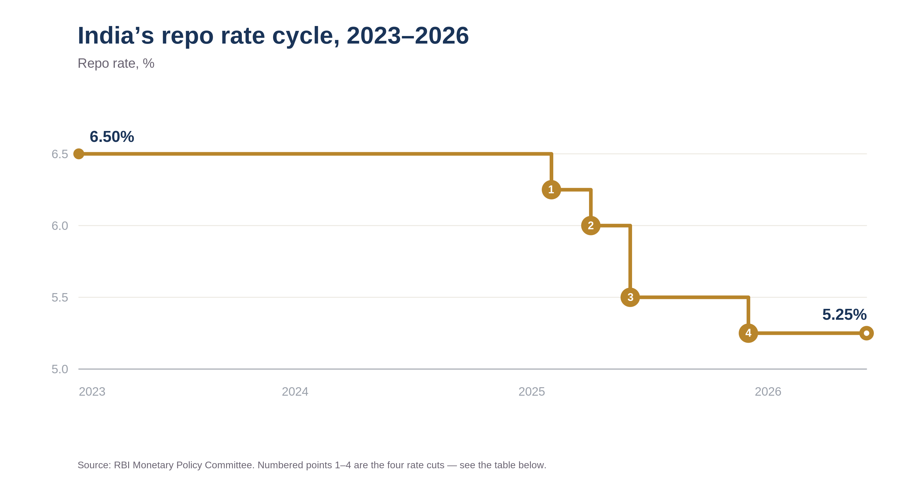
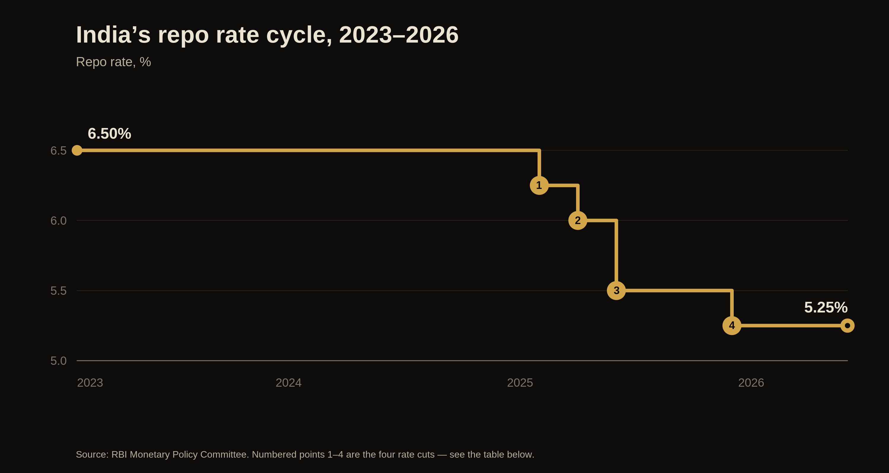

- The RBI held the repo rate at 5.25% for a third straight meeting in June 2026, keeping a neutral stance and effectively closing the easing cycle that began in early 2025.
- That cycle delivered 125 basis points of cuts across four moves between February and December 2025, taking the rate from 6.50% to 5.25%.
- Governor Sanjay Malhotra's first cut came in February 2025, after nearly two years on hold at 6.50%.
- With rates likely to stay put, the tailwind of falling rates is over, so returns now lean more on earnings and stock selection than on cheaper money.
- Bond yields, the rupee, and FII flows tied to the tax exemption are the key things to watch from here.
On 5 June, the Reserve Bank of India did what almost everyone expected. The Monetary Policy Committee left the repo rate at 5.25% and kept its stance neutral, the third consecutive policy meeting without a change, across its bi-monthly meetings in February, April and June 2026. For most headlines, that is where the story ends. We think it is where the more interesting story begins, because this pause quietly marks the close of the easing cycle that began in early 2025, and it changes how investors should think about the months ahead.
How we got here
To understand the pause, it helps to look at the path that led to it.


| # | When | Action | Repo rate |
|---|---|---|---|
| Feb 2023 | Peak, last hike | 6.50% | |
| 1 | Feb 2025 | −25 bps | 6.25% |
| 2 | Apr 2025 | −25 bps | 6.00% |
| 3 | Jun 2025 | −50 bps · stance → neutral | 5.50% |
| 4 | Dec 2025 | −25 bps | 5.25% |
| Feb–Jun 2026 | Held · 3 straight meetings | 5.25% |
The four rate cuts (1–4) total 125 bps of easing; the RBI has held at 5.25% since the December 2025 cut.
After its last hike in February 2023, the RBI held the repo rate at 6.50% for nearly two years while it waited for inflation to settle. The turn came in February 2025, when a newly appointed Governor Sanjay Malhotra delivered the first cut in almost five years, taking the rate to 6.25%. April brought another 25 basis points, and June 2025 a larger 50, pulling the rate down to 5.50% and shifting the stance from accommodative to neutral. The RBI then paused through August and October before a final 25-point cut in December 2025 brought the repo rate to 5.25%. In all, that is 125 basis points of easing in under a year.
Since then, the RBI has stayed on hold at every meeting, in February, April, and now June 2026. Looked at together, the cuts were front-loaded into a window when inflation was unusually low and the rupee was steadier, and the pauses arrived as that backdrop began to change. The June decision is less a fresh choice than the continuation of a stance the RBI settled into at the end of last year.
Why the RBI is holding now
The reasoning behind the hold is straightforward once you accept that the easing cycle has run its course. Having already delivered 125 basis points, the RBI sees limited room to support growth with more cuts, and it would rather let the earlier reductions work their way through lending rates and demand than add fresh stimulus into an inflation picture it does not fully control.
Most of the pressure now comes from outside India. The conflict in West Asia has pushed crude oil higher, and for a country that imports most of its energy, that feeds quickly into domestic prices. The rupee has felt the strain too, sliding to near record lows around 95.8 to the dollar after coming close to 97 in May, and the RBI has been spending reserves to defend it. A below-normal monsoon adds a further risk to food prices. Put together, the very low inflation of recent quarters starts to look less like a permanent feature and more like a phase that is ending. The RBI has now raised its FY27 inflation projection to 5.1%, and in our view the balance of risks still sits on the higher side of that.
India is also not easing in isolation. Several oil-importing peers, including Indonesia, the Philippines, and Sri Lanka, have raised rates over the past year to protect their currencies, and Australia has hiked three times in 2026 to tame stubborn inflation. That global drift towards tighter policy makes it harder for the RBI to move the other way without putting further strain on the rupee.
That is why we read this as a cautious hold rather than a comfortable one. The door to further cuts is not shut, but the bar to walking through it has clearly risen.
The liquidity signal
There is an important detail that often gets lost in the focus on the headline rate. The RBI is holding rates steady while keeping liquidity in the banking system deliberately comfortable. Just before the policy, it injected ₹17,445 crore through a variable rate repo auction. So even as it keeps the rate where it is to defend the currency and anchor inflation expectations, it is making sure there is enough liquidity for credit to keep flowing.
The bond market has taken the message. The 10-year government bond yield, hovering near 7%, reflects investors who have accepted that rates are not coming down in a hurry. For us, that combination of a steady policy rate and ample liquidity says more about the RBI’s intentions than the decision on the rate itself.
A second front: courting foreign capital
The RBI is not acting alone. On the fiscal side, the government has moved in the same direction. It has promulgated an ordinance that, with effect from April 1, 2026, exempts foreign institutional investors from tax on both the interest and the capital gains they earn on government securities. The aim is to reverse the heavy foreign portfolio outflows of 2026, which have run to roughly ₹2.1 lakh crore so far and well above last year’s pace, and to take some pressure off the rupee.
This is a significant change. Until now, foreign investors faced a 20% tax on the interest they earned on these securities, on top of capital gains tax, which badly dented their post-tax returns. Removing both at once makes Indian sovereign debt far more competitive for global investors. If it succeeds in drawing foreign money back into the bond market, it could ease both yields and the currency in a way the RBI’s liquidity operations cannot achieve on their own. It is worth watching closely, because the monetary and fiscal authorities are clearly trying to support the rupee from two directions at once.
What it means for investors
For investors, the takeaway is clearer than the unchanged rate suggests. A large part of the market has spent months waiting for the next cut, and we would not build a portfolio around that hope. When the cost of money stays higher for longer, the businesses that do well are the ones that can grow on real demand, capacity, and pricing power, rather than on cheap borrowing.
We continue to prefer the capex and energy side of the market, including power, metals, and the intermediaries that benefit as more people participate in the markets, where earnings are driven by volume and demand rather than by the RBI’s next move. We are more cautious on the rate-sensitive consumption names whose case depends heavily on borrowing costs coming down. In an environment like this, the quality of a balance sheet and the durability of earnings matter more than the direction of the next policy decision.
On the fixed-income side, the new tax exemption is the bigger structural change. With both interest and capital gains on government securities now free of tax for foreign institutional investors, Indian bonds become genuinely more attractive to overseas buyers, and a return of foreign demand could gradually pull yields lower even with the RBI on hold.
The road ahead
The next move, in either direction, now looks more like a second-half FY27 question, and it will depend almost entirely on where oil and the rupee settle. If both calm down, the RBI can comfortably stay on hold and, in time, may regain the room to ease. If they do not, a rate hike that seemed unlikely a few months ago becomes a real possibility, and that is a scenario few portfolios are prepared for today.
For now, the RBI has chosen patience, and given the crosswinds it is facing, that is a reasonable call. The job for investors is not to wait for relief from the central bank, but to own businesses that can do well whether or not it arrives.
It is not investment advice or a recommendation to buy or sell any security. Please consult your financial adviser before making investment decisions.
India’s repo rate cycle, 2023–2026 (dark version).